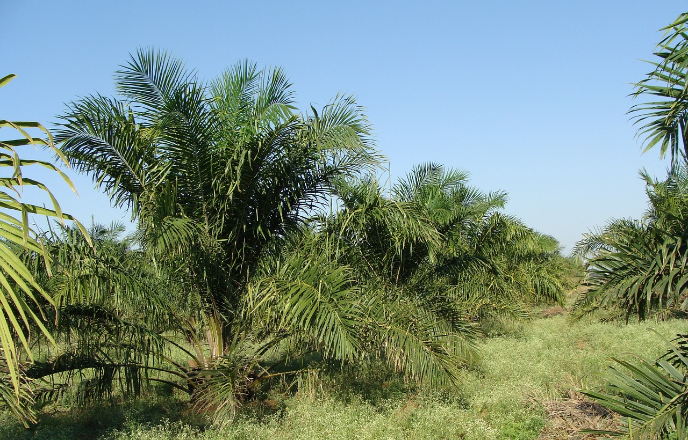

El libro de campo 2016, le permite al agricultor programar, controlar
y registrar las actividades que se realizan en la finca relacionadas
al cultivo de palma de aceite. Esta información sirve como base para
desarrollar el plan de negocios de la empresa agrícola frente a las
diferentes situaciones favorables y/o desfavorables, con el objetivo
de sacar el mayor provecho, apuntandole al aumento de la
productividad.
Este documento está conformado por un planeador mensual en el cuál el
palmicultor con el apoyo del equipo técnico programará cada una de las
actividades propias de su cultivo, una serie de formatos en los cuales
se llevará un mejor control de (registro de labores, compras,
aplicación de fertilizantes, aplicacion de agroquímicos, cosecha,
entre otros).

VENTAJAS
Se tiene un mejor control de cada una de las actividades que
realiza el pequeño productor en su cultivo.
Se pueden tomar decisiones del manejo del cultivo con base en
información real.
Se determina de manera sencilla la productividad de su negocio y
sus principales costos.
Se puede demostrar el cumplimiento de los principios y críterios
de la RSPO
Se obtiene una adecuada organización y distribución de los
recursos económicos contribuyendo al mejoramiento de la calidad de
vida en su núcleo familiar.
Se tiene un control y seguimiento de las condiciones de seguridad,
con las cuáles cuentan los trabajadores en sus actividades
diarias.